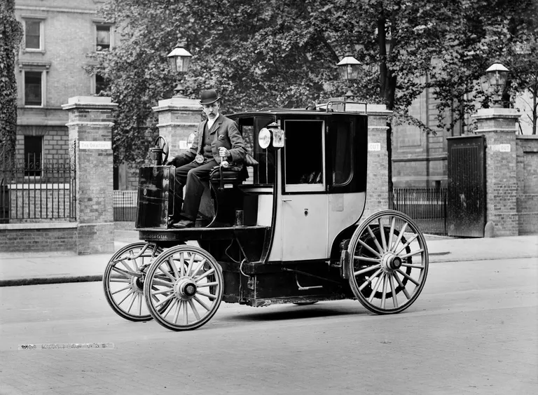

The Evolution of the Car Dates All the Way Back to the 1600s

An internal combustion engine is an engine that uses the explosive combustion of fuel to push a piston within a cylinder — the piston's movement turns a crankshaft that then turns the car wheels via a chain or a drive shaft. The different types of fuel commonly used for car combustion engines are gasoline (or petrol), diesel, and kerosene.
A brief outline of the history of the internal combustion engine includes the following highlights:
1680 - Dutch physicist, Christian Huygens designed (but never built) an internal combustion engine that was to be fueled with gunpowder.
1807 - Francois Isaac de Rivaz of Switzerland invented an internal combustion engine that used a mixture of hydrogen and oxygen for fuel. Rivaz designed a car for his engine — the first internal combustion powered automobile. However, his was a very unsuccessful design.
1824 - English engineer, Samuel Brown adapted an old Newcomen steam engine to burn gas, and he used it to briefly power a vehicle up Shooter's Hill in London.
1824 - English engineer, Samuel Brown adapted an old Newcomen steam engine to burn gas, and he used it to briefly power a vehicle up Shooter's Hill in London.
1858 - Belgian-born engineer, Jean Joseph Étienne Lenoir invented and patented (1860) a double-acting, electric spark-ignition internal combustion engine fueled by coal gas. In 1863, Lenoir attached an improved engine (using petroleum and a primitive carburetor) to a three-wheeled wagon that managed to complete a historic fifty-mile road trip.
1862 - Alphonse Beau de Rochas, a French civil engineer, patented but did not build a four-stroke engine (French patent #52,593, January 16, 1862).
1864 - Austrian engineer, Siegfried Marcus, built a one-cylinder engine with a crude carburetor and attached his engine to a cart for a rocky 500-foot drive. Several years later, Marcus designed a vehicle that briefly ran at 10 mph, which a few historians have considered as the forerunner of the modern automobile by being the world's first gasoline-powered vehicle (however, read conflicting notes below).
1873 - George Brayton, an American engineer, developed an unsuccessful two-stroke kerosene engine (it used two external pumping cylinders). However, it was considered the first safe and practical oil engine.
1876 - Nicolaus August Otto invented and later patented a successful four-stroke engine, known as the "Otto cycle".
1883 - French engineer, Edouard Delamare-Debouteville, built a single-cylinder four-stroke engine that ran on stove gas. It is not certain if he did indeed build a car, however, Delamare-Debouteville's designs were very advanced for the time — ahead of both Daimler and Benz in some ways at least on paper.
1885 - Gottlieb Daimler invented what is often recognized as the prototype of the modern gas engine — with a vertical cylinder, and with gasoline injected through a carburetor (patented in 1887). Daimler first built a two-wheeled vehicle the "Reitwagen" (Riding Carriage) with this engine and a year later built the world's first four-wheeled motor vehicle.
1886 - On January 29, Karl Benz received the first patent (DRP No. 37435) for a gas-fueled car.
1889 - Daimler built an improved four-stroke engine with mushroom-shaped valves and two V-slant cylinders.
Engine design and car design were integral activities, almost all of the engine designers mentioned above also designed cars, and a few went on to become major manufacturers of automobiles. All of these inventors and more made notable improvements in the evolution of the internal combustion vehicles.